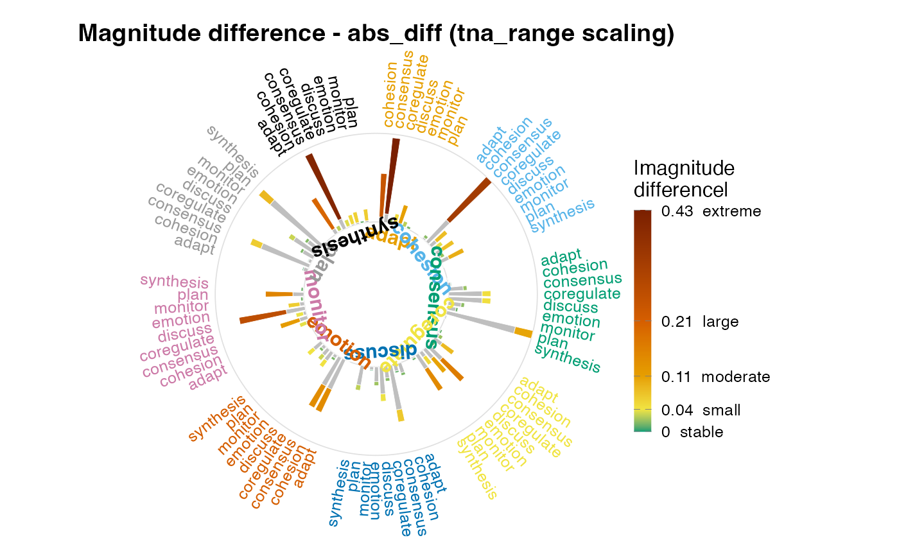
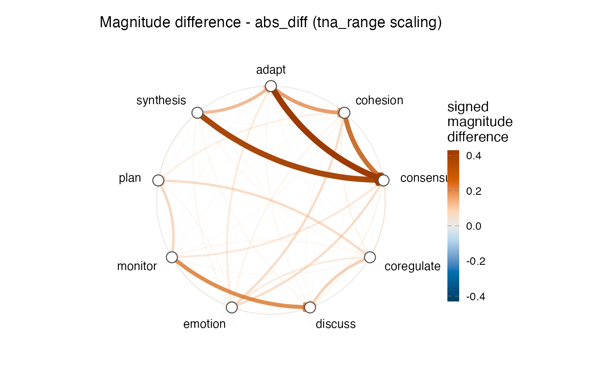

Magnitude difference between the frequency and probability views
Source:R/magnitude_difference.R
magnitude_difference.Rdmagnitude_difference() measures, edge by edge, how far the two usual
summaries of one set of sequences disagree: the raw transition counts
(frequency network, FTNA, build_network(method = "frequency")) and the
row-conditional probabilities (TNA, build_network(method = "relative")).
It builds both networks from the same event log or wide sequences, puts
the two weight matrices on a common scale and returns the per-edge
discrepancy, the magnitude difference, under one of five metrics.
The two matrices rank edges differently because row normalisation
divides each count by its source state's total: an edge that is large in
counts can be modest in probability when its source state is frequent,
and an edge from a rare source state can dominate its row in
probability. A large magnitude difference marks an edge whose importance
depends on which view is reported; it says nothing about sampling
uncertainty, which bootstrap_network() estimates for each view.
Usage
magnitude_difference(
data,
actor = NULL,
action = NULL,
time = NULL,
metric = c("abs_diff", "chord_dist", "atanh_diff", "geom_norm_diff", "cv_inflation"),
scale = c("tna_range", "rank_minmax", "minmax", "none"),
format = c("auto", "long", "wide")
)
# S3 method for class 'magnitude_difference'
print(x, ...)
# S3 method for class 'magnitude_difference'
plot(x, type = c("stacked", "circular"), min_show = 0.01, title = NULL, ...)Arguments
- data
The event log (long format, with
actionset) or wide sequences, as a data frame.- actor, action, time
The columns of a long event log, as in
build_network(). Column names are not read: withoutactionthe data is read as wide sequences, and a frame whose roles cannot be told raises an error of classnestimate_bad_input, as does a name that is not a column ofdata. DefaultNULL.- metric
The discrepancy metric, computed on the two scaled weight vectors.
"abs_diff"(default) is the absolute difference;"chord_dist"the absolute difference after each vector is scaled to unit length (chord distance on the unit sphere);"atanh_diff"the absolute difference of the Fisher z (atanh()) transforms, with values capped at1 - 1e-6, so it needs weights in [0, 1) and is not meaningful withscale = "none";"geom_norm_diff"the absolute difference after each vector is divided by its geometric mean (of the weights plus 0.001, so zeros are allowed), which enlarges small edges; and"cv_inflation"the absolute difference after each vector is divided by its standard deviation (at least 0.001).- scale
How the two weight matrices are put on a common scale before differencing.
"tna_range"(default) rescales the counts linearly into the[min, max]range of the probabilities and leaves the probabilities as they are, so the difference is in probability units."rank_minmax"replaces each matrix's values by their ranks scaled to [0, 1] (ordinal)."minmax"scales each matrix to [0, 1] separately, so the two maxima map to the same value although their native ranges differ."none"uses the raw weights.- format
The input format passed to
build_network()."auto"(default) reads wide sequences whenactionisNULLand an event log otherwise;"long"and"wide"force a reading.- x
For the
print()andplot()methods: amagnitude_differenceobject.- ...
For the
plot()method: further settings of the drawing."stacked"takesthreshold(the magnitude marked "small" in the colour key, default 10% of the largest),r_inner,r_outer,gap_rad,label_offset,label_sizeandsrc_label_size;"circular"takesself_loops(defaultTRUE),label_offsetandedge_curve. Theprint()method ignores it.- type
For the
plot()method: the kind of plot."stacked"(default) is a polar portrait with one sector per source state and one wedge per edge, grey up to the smaller of the two scaled weights and coloured by the magnitude difference from there to the larger; edges absent from both views are left out."circular"is a chord-style diagram of the signed difference (tna - ftna), its colour giving the sign and its width and opacity the magnitude.- min_show
For
type = "circular": edges whose magnitude difference is below this fraction of the largest are left out. Default0.01.- title
For the
plot()method: the plot title. DefaultNULL, which names the metric and the scale.
Value
A magnitude_difference object. print() reports the metric,
the scale, the states, the number of edges and the minimum, quartiles,
mean and maximum of the magnitude differences; plot() draws them.
The object's fields:
- edges
One row per ordered pair of states (the self-transitions and absent edges included), with the columns
from,to,ftnaandtna(the scaled weights),signed(tna - ftna) andvalue(the chosen metric).- metric, scale
The metric and scale used.
- weights_ftna, weights_tna
The two scaled weight matrices.
- states
The state names.
For the plot() method: a ggplot object. The print() method
returns x invisibly.
Examples
data(group_regulation_long, package = "Nestimate")
fit <- magnitude_difference(group_regulation_long,
actor = "Actor", action = "Action",
time = "Time")
print(fit)
#> magnitude_difference object
#> metric: abs_diff scale: tna_range
#> states (9): adapt, cohesion, consensus, coregulate, discuss, emotion, monitor, plan, synthesis
#> edges: 81
#> magnitude-difference summary (abs_diff):
#> Min. 1st Qu. Median Mean 3rd Qu. Max.
#> 0.00000 0.01143 0.03002 0.06035 0.06894 0.42910
# \donttest{
# The polar portrait shows which edges row-normalization promotes.
plot(fit) # stacked polar portrait

plot(fit, type = "circular") # chord-style diagram

# }